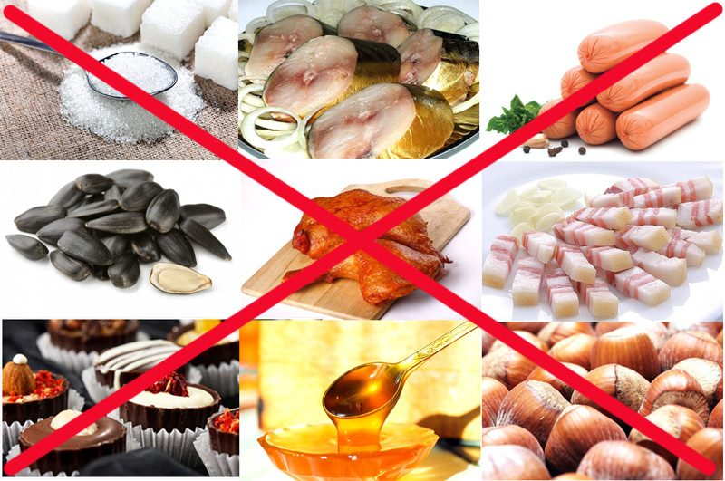

Самым первым шагом конечно же,будет изучение и ознакомление с нашей стартовой страницей:что же это за программа,для чего она нужна,и что за красавчики её сделали?
На втором шаге мы начинаем уже взаимодействовать с нашей программой,для этого в начале всего нам необходимо выбрать нужную кухню,из которой мы хотим блюдо.

На нашем третьем шаге мы исключаем те ингридиенты/продукты,которые мы не хоти видеть в нашем блюде,либо возможно на которые может быть аллергия.
Заключительным шагом будет добавление продуктов/ингридиентов,которые вы бы хотели видеть в вашем блюде,возможно что-то более острое?,или быть может охота чего-то мясного?
И вот,благодаря нашему сервисву по подбору еды,вы можете выбрать для себя блюдо,подходящее вашему рациону питания,либо же вашим желаниям. А для его приготовления в этом вам уже помогут кулинарные сайты.